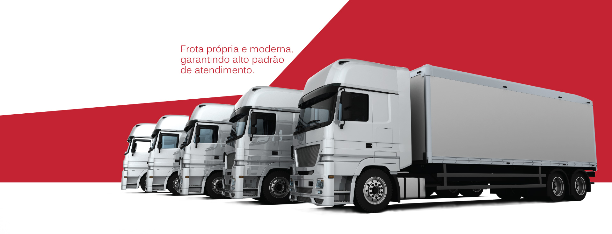

A frota da Itapuã Transportes é composta por veículos próprios e modernos, que atendem aos padrões mais altos de qualidade do atendimento, com utilização de sistema de comunicação móvel, software de mapeamento e rastreamento Autotrac Prime de última geração. A Itapuã tem como premissa a qualidade do serviço, por isso, realiza a manutenção de todos os veículos nas concessionárias autorizadas.
Oferecemos soluções eficazes em transporte de cargas atendendo as diferentes necessidades dos nossos clientes. Atuamos em todo o território nacional e temos como premissa a satisfação dos nossos clientes, oferecendo integração com seus processos e transparência nas nossas operações.
Cultivamos nossa relação e parceria criada ao longo da história. Buscamos servir de forma inovadora e que agregue valor a clientes de diferentes portes e segmentos. Dessas parcerias surgem ações cada vez mais alinhadas com a nossa política e metodologia de trabalho.

Segurança, agilidade, qualidade, satisfação, melhoria contínua e resultados. Essas são palavras chaves para a Itapuã Transportes, que segue na sua política de qualidade.

A Itapuã preza pela conservação do meio ambiente e realiza ações para seguir de acordo com a legislação vigente.

A Itapuã Transportes possui gerenciamento de riscos. O serviço é executado 24h por dia e 7 (sete) dias por semana por empresa especializada, que monitora e avalia todos os processos realizados durante o transporte para evitar possíveis eventos e sinistros, minimizar perdas e evitar agravamento de apólice.